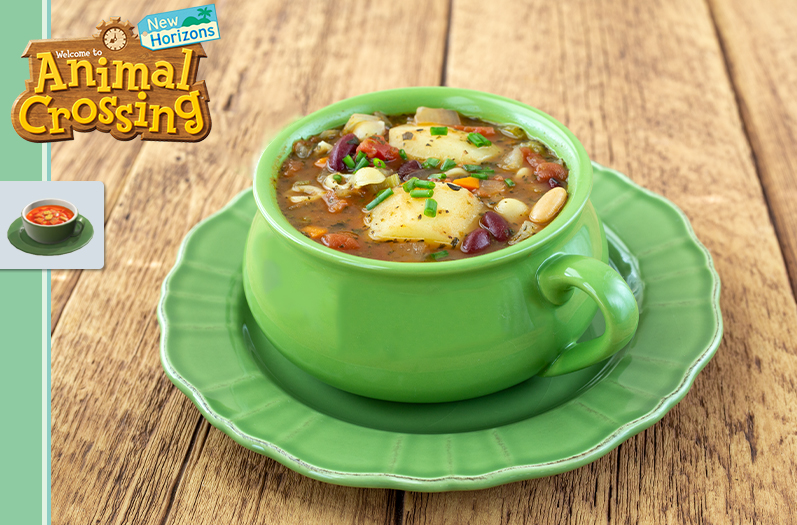

Animal Crossing: Minestrone Soup

Let's go gather!
A simple, reheat-friendly recipe for leftover lovers. It takes very little to make a great minestrone - but beware of cooking time!
Ingredients
- 1 Onion (Chopped)
- Salt
- Pepper
- 2 Carrots (Chopped)
- 3 Celery Stalks (Chopped)
- 1 Tablespoon of parsley (Chopped)
- 1 Tablespoon of dried basil
- 2 Tablespoon of dried oregano
- 1 Tablespoon of dried thyme
- 1 Tablespoon of sugar
- 28 Oz of diced tomatoes
- 4 Cups of vegetable stock
- 2 Bay leaves
- 2 Russet potatoes (Chopped)
- 1/2 Cups of small pasta
- 15 Oz of canned kidney beans
- 15 Oz of canned cannellini beans
- Chopped chives garnish
Steps
- Place a large pot over medium-low heat. Add the onions and sauté until they become translucent (5 min.). Season with salt and pepper. Add the celery and carrots. Cook until the carrots have softened slightly (7 min.).
- Add the parsley, basil, oregano, thyme, and sugar to the pot. Mix the spices with the vegetables. Once combined, add the diced tomatoes and mix together. Finally, add the vegetable stock and stir together. Lower the heat to low and cover. Allow simmer for 1 ½ hours.
- After the soup has cooked for the required time, increase the heat to medium. Add the potatoes and beans and allow it to cook until the potatoes are slightly soft (20 min.). Add the pasta and cook until the pasta is cooked (15 min.). Serve immediately and top with freshly chopped chives.